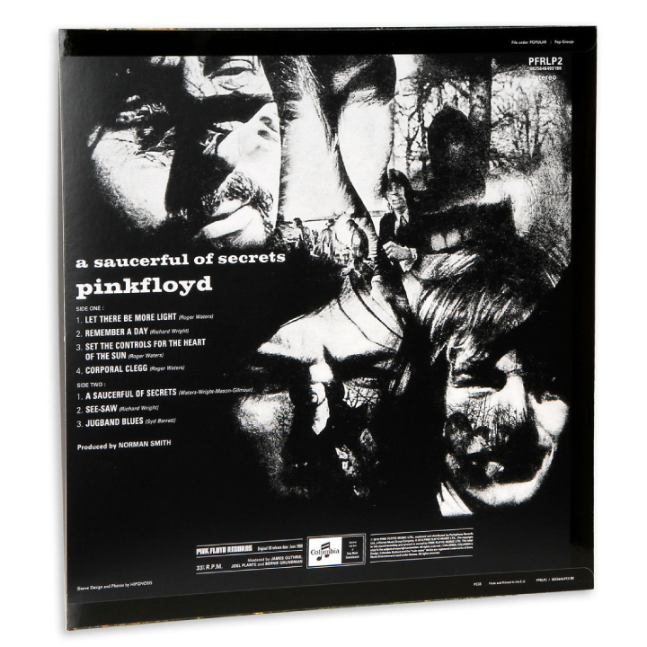

A Saucerful of Secrets
Wydany: 29 czerwca 1968 | Wytwórnia: Columbia Records
O albumie
"A Saucerful of Secrets" to drugi album studyjny Pink Floyd i jeden z najbardziej przełomowych momentów w historii zespołu. Album powstawał w wyjątkowo trudnych okolicznościach — w trakcie nagrań Syd Barrett, założyciel i lider grupy, stopniowo tracił kontakt z rzeczywistością z powodu choroby psychicznej nasilonej nadużywaniem narkotyków. Był to jedyny album, na którym zagrali zarówno Barrett, jak i jego następca — David Gilmour.
Album wyznacza wyraźną granicę między psychodeliczną erą Barretta a nowym, bardziej eksperymentalnym i instrumentalnym kierunkiem, który zespół obrał pod przywództwem Rogera Watersa i Ricka Wrighta. Muzyka stała się ciemniejsza, bardziej abstrakcyjna i ambitna — zapowiadając monumentalne dzieła, które miały nadejść w kolejnej dekadzie.
Tytułowy utwór "A Saucerful of Secrets" to dwunastominutowa kompozycja instrumentalna podzielona na cztery części, będąca pierwszym przykładem rozbudowanej formy narracyjnej, którą Pink Floyd będzie doskonalić przez kolejne lata. Album jest dziś uznawany za kluczowy dokument przejścia od psychodelii do rocka progresywnego.
Okładka albumu

Oryginalna okładka albumu
Zaprojektowana przez Hipgnosis — psychodeliczny kolaż z kosmicznymi motywami, komiksowymi postaciami i surrealistycznymi obrazami. Okładka idealnie oddaje chaotyczny, eksperymentalny charakter muzyki zawartej na albumie. Była jedną z pierwszych prac studia Hipgnosis dla Pink Floyd — początkiem długoletniej i owocnej współpracy.

Tył okładki
Tylna okładka zawiera zdjęcia członków zespołu w charakterystycznej dla epoki psychodelicznej estetyce. Widoczna jest na niej cała piątka muzyków — w tym Syd Barrett, który wkrótce miał opuścić zespół na zawsze. To jedno z ostatnich oficjalnych zdjęć Barretta jako członka Pink Floyd.
Lista utworów
| Nr. | Tytuł | Długość | Opis |
|---|---|---|---|
| 1. | Let There Be More Light | 5:38 | Otwierający utwór z kosmicznym tekstem Watersa — zapowiedź nowego kierunku zespołu |
| 2. | Remember a Day | 4:33 | Nostalgiczna ballada Ricka Wrighta o utraconej niewinności dzieciństwa |
| 3. | Set the Controls for the Heart of the Sun | 5:28 | Hipnotyczny, orientalny utwór Watersa — jeden z pierwszych klasyków nowej ery Pink Floyd |
| 4. | Corporal Clegg | 4:12 | Satyryczny utwór Watersa o weteranie wojennym, z charakterystycznym kazoo |
| 5. | A Saucerful of Secrets | 11:59 | Monumentalna, czteroczęściowa kompozycja instrumentalna — pierwsze wielkie dzieło Pink Floyd |
| 6. | See-Saw | 4:36 | Melancholijna kompozycja Wrighta z bogatymi harmoniami wokalnymi |
| 7. | Jugband Blues | 3:00 | Ostatni utwór Syda Barretta nagrany z zespołem — surrealistyczna, rozpadająca się kompozycja będąca świadectwem jego choroby |
Całkowity czas trwania: 39:46
Osiągnięcia i wyróżnienia
UK Albums Chart
Miejsce #9 w Wielkiej Brytanii
Znaczenie historyczne
Jedyny album nagrany wspólnie przez Syda Barretta i Davida Gilmoura
Rolling Stone
Uznany za jeden z albumów, które ukształtowały rock progresywny
Dziedzictwo koncertowe
Tytułowy utwór grany na żywo przez dekady — w tym na słynnym koncercie w Pompejach
Wpływ na gatunek
Uznawany za jeden z fundamentów rocka progresywnego i muzyki eksperymentalnej
Analiza kluczowych utworów
A Saucerful of Secrets
Tytułowa kompozycja to pierwsze wielkie dzieło Pink Floyd i zapowiedź wszystkiego, co miało nadejść. Dwunastominutowy utwór instrumentalny podzielony jest na cztery części: "Something Else", "Syncopated Pandemonium", "Storm Signal" i "Celestial Voices". Każda z nich tworzy odrębny nastrój — od chaotycznej kakofoniidźwięków po spokojne, organowe zakończenie.
Utwór był komponowany przy użyciu graficznej notacji muzycznej zamiast tradycyjnych nut — muzycy rysowali kształty i linie, które interpretowali jako wskazówki wykonawcze. Ta awangardowa metoda pracy była inspirowana muzyką współczesną Karlheinza Stockhausena i stała się fundamentem eksperymentalnego podejścia zespołu.
Jugband Blues — pożegnanie Syda Barretta
Ostatni utwór albumu to jedno z najbardziej poruszających i niepokojących nagrań w całej dyskografii Pink Floyd. "Jugband Blues" napisał Syd Barrett — i choć formalnie jest to jego kompozycja, brzmi jak zapis rozpadu umysłu. Tekst jest fragmentaryczny, surrealistyczny i pełen dysocjacji: Barrett śpiewa o tym, że nie wie, kim jest i czy w ogóle istnieje.
W połowie utworu Barrett poprosił o zaproszenie przypadkowej orkiestry Armii Zbawienia, która gra zupełnie niezależnie od reszty zespołu — każdy muzykant grał co chciał. Następnie muzyka urywa się, Barrett gra sam na akustycznej gitarze, po czym utwór kończy się równie nagle jak zaczął. To muzyczny portret choroby psychicznej, nieświadomie nagrany przez jej ofiarę.
Set the Controls for the Heart of the Sun
Hipnotyczny, powolny utwór Rogera Watersa inspirowany chińską poezją dynastii Tang. Tekst jest kolażem fragmentów wierszy, tworzącym oniryczny obraz kosmicznej podróży. Muzycznie utwór opiera się na jednostajnym, transowym rytmie Nicka Masona i orientalnych brzmieniach organów Wrighta.
Utwór stał się jednym z najważniejszych w repertuarze koncertowym Pink Floyd — grany był przez ponad dekadę, ewoluując z każdym wykonaniem. Wersja koncertowa z "Ummagumma" trwa ponad dziewięć minut i jest uznawana za jedną z najlepszych interpretacji tego utworu.
Odejście Syda Barretta
Nagrania "A Saucerful of Secrets" były świadkiem jednego z najbardziej dramatycznych momentów w historii rocka. Syd Barrett, genialny założyciel i twórczy motor Pink Floyd, stopniowo przestawał funkcjonować. Podczas sesji nagraniowych potrafił godzinami stać nieruchomo z gitarą, nie grając ani jednej nuty. Innym razem przychodził do studia z zupełnie nowymi, niedokończonymi piosenkami, których nie był w stanie zagrać spójnie.
Pozostali członkowie zespołu podjęli bolesną decyzję o zaproszeniu Davida Gilmoura jako drugiego gitarzysty — początkowo z myślą, że Barrett będzie pisał piosenki i nie będzie musiał występować na żywo. Ten plan szybko okazał się niemożliwy do realizacji. W lutym 1968 roku, jadąc na jeden z koncertów, reszta zespołu po prostu nie podjechała po Barretta. Nikt tego nie powiedział wprost — Barrett przestał być członkiem Pink Floyd bez formalnego pożegnania.
"A Saucerful of Secrets" jest więc albumem wyjątkowym i niepowtarzalnym — jedynym miejscem, gdzie słychać zarówno stary Pink Floyd Barretta, jak i nowy Pink Floyd Watersa i Gilmoura. To muzyczny most między dwiema epokami, nagrany w cieniu tragedii osobistej.
Ciekawostki
- To jedyny album Pink Floyd, na którym zagrali zarówno Syd Barrett, jak i David Gilmour
- Tytułowa kompozycja była komponowana przy użyciu graficznej notacji zamiast tradycyjnych nut
- Barrett nagrał "Jugband Blues" prosząc o zaproszenie przypadkowej orkiestry Armii Zbawienia do studia
- Okładkę zaprojektowało studio Hipgnosis — był to początek ich wieloletniej współpracy z Pink Floyd
- "Set the Controls for the Heart of the Sun" zawiera fragmenty chińskiej poezji dynastii Tang
- Album był nagrywany w Abbey Road Studios w Londynie, równolegle z nagraniami The Beatles
- "Remember a Day" Ricka Wrighta zostało wyprodukowane przez Normana Smitha, nie przez samego zespół
- Tytułowy utwór był grany na żywo przez Pink Floyd jeszcze w latach 70., długo po wydaniu albumu
- Barrett pojawił się na okładce, choć w momencie jej projektowania praktycznie nie był już członkiem zespołu
Wpływ kulturowy i dziedzictwo
"A Saucerful of Secrets" jest albumem, który często gubi się w cieniu późniejszych, bardziej znanych dzieł Pink Floyd. To niesprawiedliwe — bez tego albumu nie byłoby "Meddle", "The Dark Side of the Moon" ani "The Wall". To tutaj zespół po raz pierwszy udowodnił, że potrafi tworzyć monumentalne, wieloczęściowe kompozycje instrumentalne o głębokiej sile emocjonalnej.
Album wywarł ogromny wpływ na rozwój rocka progresywnego w Wielkiej Brytanii. Zespoły takie jak Yes, Genesis czy King Crimson czerpały inspirację z eksperymentalnego podejścia Pink Floyd do formy i struktury muzycznej. Tytułowy utwór był bezpośrednim dowodem, że rock może być tak samo ambitny jak muzyka klasyczna.
Dziś "A Saucerful of Secrets" jest ceniony przede wszystkim jako dokument historyczny i artystyczny. To album, który słucha się inaczej, wiedząc o okolicznościach jego powstania — o Barretcie stojącym nieruchomo w studiu, o Gilmourze uczącym się partii gitarowych, o zespole próbującym odnaleźć się w obliczu kryzysu. Muzyka niesie w sobie ten ciężar i jest przez to głęboko ludzka.